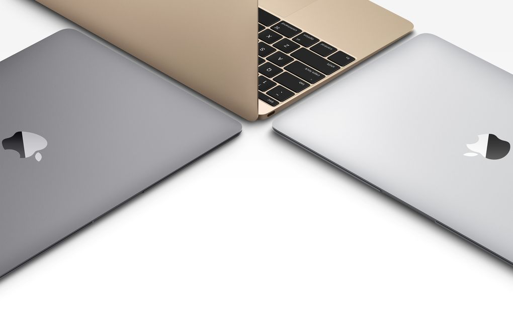
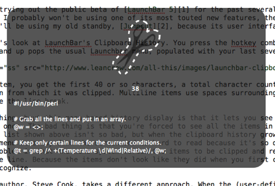
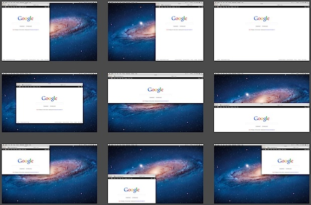

My Favorite Mac Tools
 I've been using macs since I was a senior in high school, so for over a dozen years ago! But I didn't really get "good" at using them till I became a coder a few years ago. But I've found that there are definitely tools that help my efficiency, and I wanted to write about 2 of my favorites today: Jumpcut and Spectacle. These are both tools that create keyboard shortcuts for some awesome functionality they add.
Jumpcut
 Jumpcut is a copy and paste tool. It basically keeps a history of last 100 or so "copies" and let's you choose them easily with a hotkey shortcut. I have mine set to "Shift + Command + V" and when I press it I can use my arrow keys to go through my history of copies and pick from them!
Spectacle

Spectacle is a window size management program. It lets you automatically size a window with keyboard shortcuts and it also lets you move windows between different monitors if you have dual-monitor setup."Alt + Command + Right" lets you resize the window to fit the right half of the page. Pushing it again resizes it by thirds. "Alt + Command + Left" lets you do the same thing except on the left side. "Ctrl + Command + F" lets you go in and out of full screen. And lastly, "Ctrl + Alt + Command + Right/Left" lets you move between screens. These are the main shortcuts I use and they are definitely really helpful!
What I Learned Today:
Mike Bostock from the NY Times is the creator of the D3.js library.